Locații de nuntă în Bușteni
- locații în director
- 18
- cu cazare în registrul SITUR
- 8
- medie ponderată Google
- 4,4 / 5
- evaluări Google
- 39.597
Cum alegi o locație în Bușteni
În Bușteni poți începe comparația cu Moon Resort (hotel), Vila Doi Ponei - Cazare Busteni (vilă), Forest Retreat Luxury Villas (vilă). Aceste proprietăți apar în primele poziții când luăm în calcul împreună nota și numărul de evaluări Google. Salvează adresele care vă interesează pentru a le așeza apoi alături în fișa de comparare a ofertelor.
În fișele proprietăților poți compara dotări concrete la Moon Resort (cazare, parcare gratuită, wi-fi gratuit), Vila Doi Ponei - Cazare Busteni (grădină, cazare, parcare gratuită). Pentru oferta de nuntă, întreabă ce spații și servicii dintre cele prezentate intră în rezervarea privată pentru data voastră.
Dacă vin rude de departe, Vila Doi Ponei - Cazare Busteni are o unitate de cazare asociată în registrul SITUR. Înregistrarea pentru Doi Ponei cuprinde 40 de locuri de dormit în 20 de spații de cazare. Întreabă câte camere pot fi păstrate pentru aceeași noapte înainte să trimiți invitaților detaliile de rezervare.
Dacă vrei să vezi două proprietăți în aceeași zi, poți continua de la Suru Hotel spre Complex Mona Caraiman din Poiana Țapului. Punctele lor sunt la 0,6 km în linie dreaptă. Deschide traseul înainte să fixezi ora celei de-a doua vizite, mai ales dacă grupul se deplasează cu autocarul.
Locații pentru vizionare
Ordinea ține cont de nota Google și de numărul evaluărilor. Cum calculăm ordinea
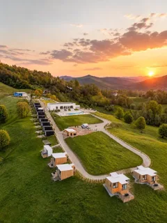
Fotografie a locației · Sursa fotografiei Bușteni · Hotel
Moon Resort
Moon Resort, Bușteni. Un oaspete care a rezervat un Chalet pentru un weekend descrie o terasă proprie și o curte mică, cu grătar.
Strada Căprioarei 27, 105500 Bușteni+40 747 133 460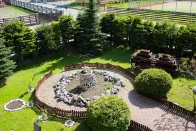
Fotografie a locației · Sursa fotografiei Bușteni · Vilă
Vila Doi Ponei - Cazare Busteni
Vila Doi Ponei - Cazare Busteni, Bușteni. Un adult care i-a însoțit spune că la masă au avut legume proaspete din ferma gazdelor.
Strada Crinei 9, 105550 Bușteni+40 746 024 301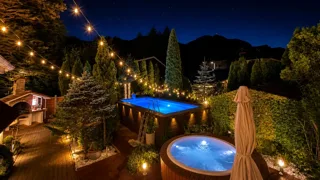
Fotografie a locației · Sursa fotografiei Bușteni · Vilă
Forest Retreat Luxury Villas
Forest Retreat Luxury Villas. La Forest Retreat, Vila IRIS apare într-un scenariu bine delimitat: cununie în grădină, apoi cină și petrecere în vilă.
Strada Primăverii 12, 105500 Bușteni+40 728 866 992
Fotografie a locației · Sursa fotografiei Bușteni · Hotel
Suru Hotel
Suru Hotel. Pentru rudele care rămân peste noapte la Bușteni, oaspetele care descrie camerele de la Suru remarcă și varietatea micului dejun.
Bulevardul Independenței 33, 105500 Bușteni+40 743 214 084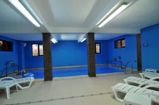
Fotografie a locației · Sursa fotografiei Bușteni · Restaurant
Complex Cochet
Cineva care a trecut pe la Complex Cochet în drum spre Cascada Urlătoarea a revenit după plimbare pentru masă.
Strada Urlătoarei 26, 105500 Bușteni+40 752 218 620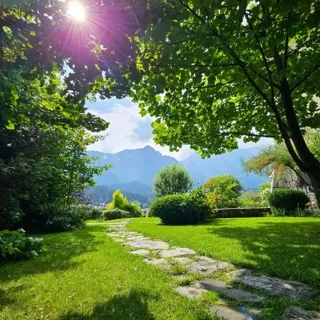
Fotografie a locației · Sursa fotografiei Bușteni · Hotel
Vila Leonida
Vila Leonida, Bușteni. La Leonida, o viitoare mireasă și-a petrecut aici petrecerea burlăcițelor alături de prietene.
Strada Șoimului 10, 105500 Bușteni+40 758 018 480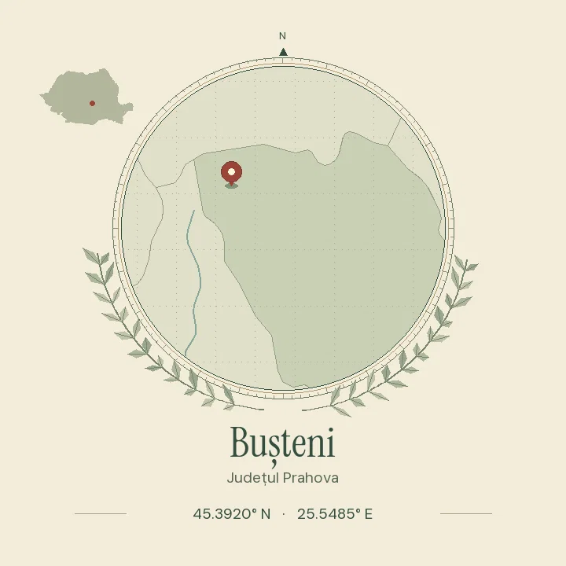
Hartă ilustrată Bușteni · Cazare în regim hotelier
BLUE CAT GARDEN RESIDENCE
Vilă în Poiana Țapului, Bușteni, cu terasă la marginea pădurii, foișor și grătar; 5 evaluări de nota maximă, fără nunți documentate.
Strada Zorilor 26, 105500 Bușteni+40 734 428 199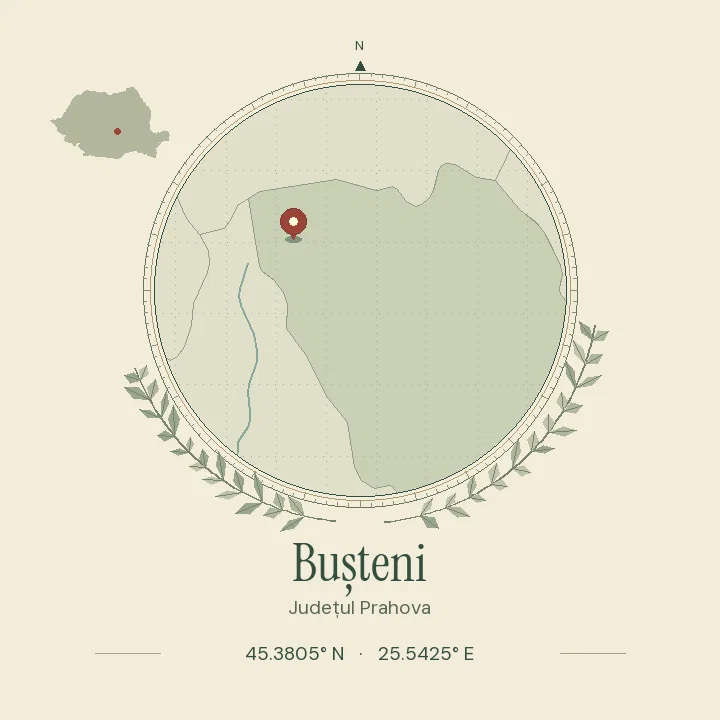
Hartă ilustrată Bușteni · Hotel
YAEL LUXURY APARTMENTS 4
YAEL LUXURY APARTMENTS 4, prahova. Perioada sărbătorilor este particulară, dar detaliul vă ajută să formulați o întrebare concretă.
busteni, Str. Cumpătul, 105500 prahova+40 732 346 355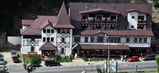
Fotografie a locației · Sursa fotografiei Bușteni · Hotel
Conac Bavaria
Hotel cu restaurant bavarez la ieșirea din Bușteni spre Azuga: 60 de locuri în sală și 40 pe terasă. Ce laudă oaspeții și ce să verifici.
Bulevardul Libertății 211, 105500 Bușteni+40 752 112 636
Fotografie a locației · Sursa fotografiei Bușteni · Bed & Breakfast
Casa Freya Busteni
Un sejur la Casa Freya, la trecerea dintre octombrie și noiembrie, oferă un reper pentru cuplurile care se gândesc la o nuntă de toamnă în Bușteni.
Strada Făgetului 31, 105500 Bușteni+40 727 855 061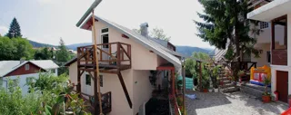
Fotografie a locației · Sursa fotografiei Bușteni · Cazare
Cazare Busteni - Kalinderu
Apartamente în Bușteni cu vedere spre Castelul Cantacuzino, restaurant de 35 de locuri și grădină de vară pentru 20. Cazare între 250 și 350 de lei pe noapte.
Strada Fântânii, 105500 Bușteni
Fotografie a locației · Sursa fotografiei Bușteni · Vilă
Villa Ermitage Busteni
Villa Ermitage Busteni. Pentru Villa Ermitage, un oaspete cazat în 2026 descrie o ședere cu pensiune completă și apreciază mesele primite.
Strada Palanca 9e, 105500 Bușteni+40 723 139 344
Fotografie a locației · Sursa fotografiei Bușteni · Restaurant
Restaurant La Cerdac
Restaurant La Cerdac. La Cerdac, un mesean descrie o oprire în Poiana Țapului cu bulz, saramură de păstrăv și carne la garniță cu mămăligă și hribi.
Strada Șoimului 11, 105500 Bușteni+40 751 189 801
Fotografie a locației · Sursa fotografiei Bușteni · Pensiune
Casa Magică
Pensiune cu restaurant tradițional în Bușteni, cazare de la 180 de lei pe noapte. Laude pentru porții, critici pentru servire în zilele aglomerate.
Strada Valea Albă 44, 105500 Bușteni+40 745 207 680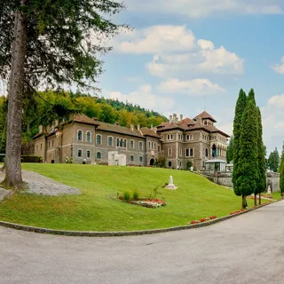
Fotografie a locației · Sursa fotografiei Bușteni · Castel
Castelul Cantacuzino
Castel neoromânesc din Bușteni cu terasă spre Bucegi și Caraiman, 25.667 de evaluări. Nunțile nu sunt documentate; ce să întrebi pentru poze sau o cină.
Strada Zamorei 1, 105500 Bușteni+40 373 811 415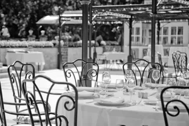
Fotografie a locației · Sursa fotografiei Bușteni · Restaurant cu specific francez
Restaurant Canta Cuisine
Restaurant Canta Cuisine. Cotletul de porc cu sos de gorgonzola și obrajii de vită sunt alegerile povestite de un client la Canta Cuisine.
Strada Zamorei, 105500 Bușteni+40 737 299 464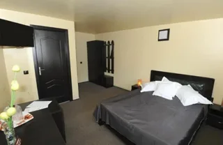
Fotografie a locației · Sursa fotografiei Bușteni · Restaurant
Farfuria plină
Restaurant cu muzică live și pensiune în Bușteni, nota 4,1. Recenziile din 2026 semnalează mâncare reîncălzită; cere degustare și contract scris.
Bulevardul Libertății 220, 105500 Bușteni+40 771 106 906
Fotografie a locației · Sursa fotografiei Bușteni · Hotel
Hotel Silva
Hotel Silva. Un oaspete care a revenit în mai multe sezoane spune că a cerut de fiecare dată o cameră orientată spre Crucea de pe Caraiman.
Strada Telecabinei 54a, 105500 Bușteni+40 244 321 412
Întrebări despre locațiile din Bușteni
Unde pot dormi invitații în Bușteni?
În registrul de cazare SITUR găsim Vila Doi Ponei - Cazare Busteni (40 de locuri de cazare), Suru Hotel (38 de locuri de cazare), Complex Cochet (12 locuri de cazare). Verifică ce camere sunt libere pentru noaptea evenimentului.
Ce proprietăți din Bușteni au grădină sau terasă?
Vila Doi Ponei - Cazare Busteni (grădină, foișor); Forest Retreat Luxury Villas (grădină, terasă); Conac Bavaria (terasă). Cere administratorului condițiile de folosire pentru o petrecere privată.
Care locație din Bușteni are cele mai multe evaluări Google?
Castelul Cantacuzino are 25.667 de evaluări în profilul Google folosit la documentare. Evaluările acoperă și alte experiențe la proprietate, inclusiv vizitele fără eveniment.
Unde apare o intrare accesibilă în Bușteni?
Profilurile Google indică o intrare accesibilă la Villa Ermitage Busteni, Castelul Cantacuzino. Pentru o cununie în exterior, cere detalii despre traseul dintre intrare și zona cu scaune.
Ce alte localități pot include într-o vizionare lângă Bușteni?
Cele mai apropiate adrese comparate pe hartă sunt în Poiana Țapului, Sinaia, Azuga. Găsești mai jos distanțele dintre proprietățile folosite pentru această comparație.
Vizionări în apropiere
- Poiana Țapului · 1 locație. Între Suru Hotel și Complex Mona Caraiman sunt 0,6 km în linie dreaptă.
- Sinaia · 8 locații. Între YAEL LUXURY APARTMENTS 4 și KUIB Restaurant sunt 1,6 km în linie dreaptă.
- Azuga · 1 locație. Între Conac Bavaria și Cramele Prahova sunt 2,5 km în linie dreaptă.
Alte adrese din aceeași unitate administrativă
Complex Mona Caraiman (Poiana Țapului).